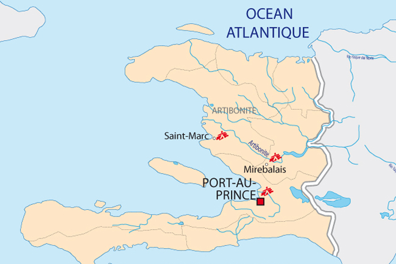

Et c'est vrai. Il est aujourd'hui évident que les responsables de l'introduction de la bactérie Vibrio Cholerae sont des casques bleus népalais venus aider après les violents séismes de 2010. Les casques bleus népalais étaient des porteurs sains de la maladie et auraient souillés l'affluent de l'Artibonite (la rivière Maya), près de leur campement. L'ONU a longtemps nié être responsable de la propagation du Choléra à travers le pays mais le 18 août 2016, a partiellement reconnue sa responsabilité et le 1er décembre le secrétaire général de l'ONU Ban Ki-moon devant l'assemblée générale de l'ONU prononce un discours où il avoue et s'excuse pour le rôle qu'à jouer l'ONU dans la propagation du Choléra à Haïti. Le fleuve artibonite :
